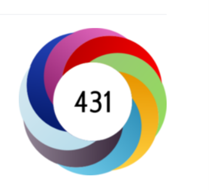
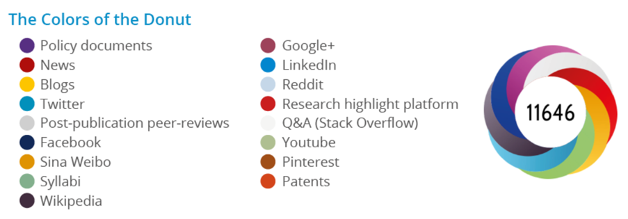
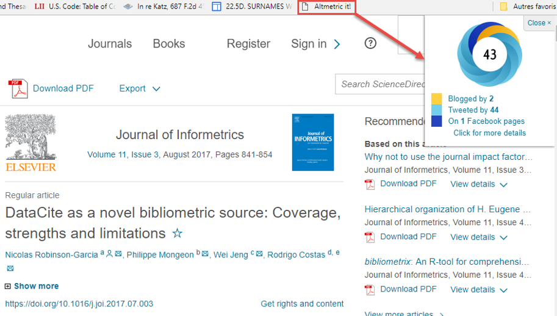
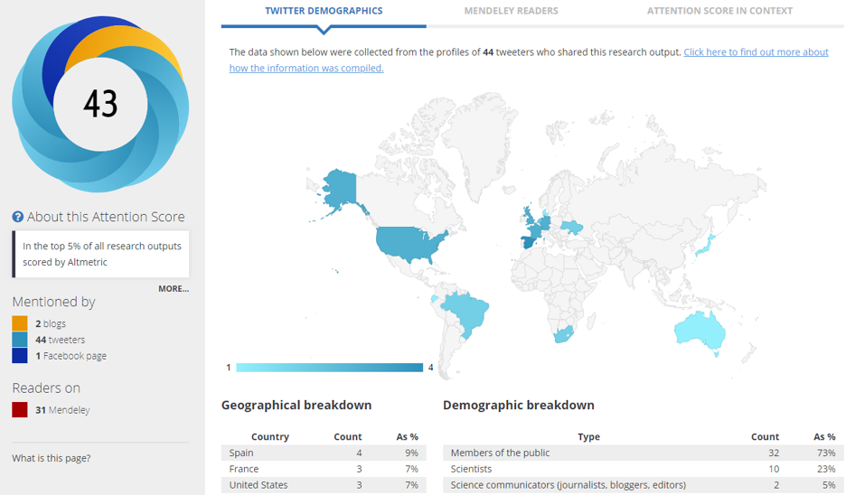
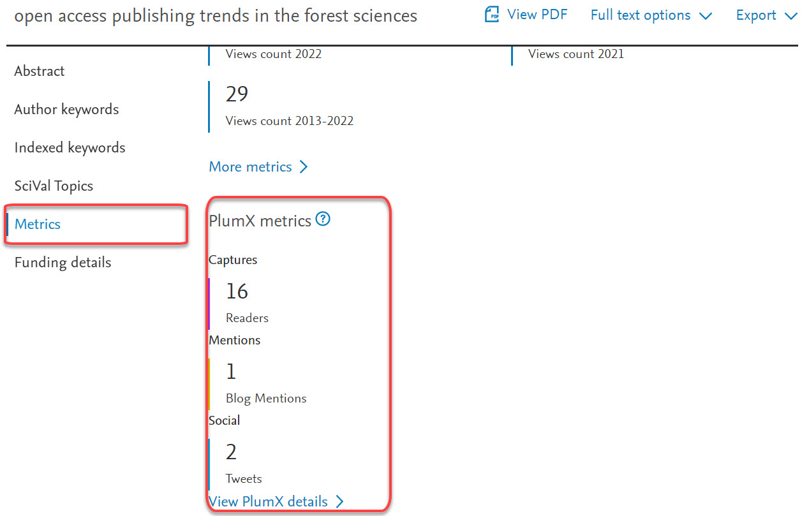
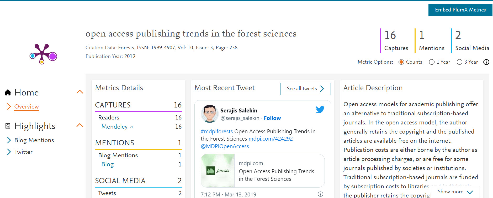

library(httr)
library(stringr)
library(dplyr)
email <- "YOUR EMAIL HERE"
doi <- "DOI HERE"
filename <- "event_data_output.csv" # change the name of the output file as needed (as to be a .csv).
events_raw <- content(GET(str_c("https://api.eventdata.crossref.org/v1/events?mailto=",
email,"&obj-id=",doi,"&rows=1000", sep = "")))$message$event
events <- tibble()
for (i in 1:length(events_raw)) {
data<-tibble()
subj_id <- events_raw[[i]]$subj_id
relation <- events_raw[[i]]$relation_type_id
obj_id <- events_raw[[i]]$obj_id
date <- events_raw[[i]]$occurred_at
events <- bind_rows(events, tibble(subj_id, relation, obj_id, date))
}
write.csv(events, filename)8 Altmetrics
8.1 What are altmetrics?
Citations, the main form of engagement captured by “traditional” bibliometrics, occurs within the scholarly communication system (citations to journal publications come from other journal publications). Alternative metrics, or “altmetrics”, is the set of metrics that aim to capture alternative forms of engagement with research outputs that are not confined to the scholarly communication system. Examples include mentions or discussions of research outputs on Twitter or other social media platforms, in blogs, news articles, references to research outputs in Wikipedia or policy documents, and other indicators such as the number of times an articles is saved in a reference manager, viewed, downloaded, or shared. Many of these altmetrics attempt to measure attention or engagement, as opposed to measuring the scientific impact of a work through bibliometrics. While altmetrics have, in practices, mainly focused on capturing engagement with research beyond academia, they can also be used to capture alternative forms of research activity and output such as the blogs, datasets, conference presentations and YouTube videos produced by researchers.
8.2 Data sources
8.2.1 Commercial data sources
8.2.1.1 Altmetric
Altmetric (https://www.altmetric.com/) is an appropriately named company that supplies altmetric data. Using a variety of sources ranging from social media to policy documents, Altmetric tracks conversations around scholarly content. Their goal is to illuminate the attention that scientific articles are receiving in real-time, which allows authors and publishers to know what people are saying about their work.
The Altmetric donut illustrated below is designed to convey the amount and type of attention a scholarly article has received at a quick glance.

The colors of the donut each represent a different attention source. This means that the amount of color in the donut varies based on how much attention an article has received from different sources.

The number in the middle of the donut is the Altmetric Attention Score, which is a weighted count of all the attention a scholarly article has received. It is calculated based on three factors:
- Volume: The more people mention an article, the higher its score will be.
- Sources: Different sources of mentions contribute a different weighted amount to the Altmetric Attention Score. For example, being mentioned in a news article carries more weight than being mentioned in a tweet and thus contributes to a higher score.
- The sharing frequency of the source: The amount that an author of a mention generally talks about scholarly articles is considered in the score. For example, a doctor who shares a link with other doctors on Twitter counts more than a journal’s Twitter account that automatically pushes out links to all their articles.
A good way to collect altmetric data for a publication is to use the Altmetric Bookmarklet.
Once added to your bookmarks, you can click on the Altmetric it! bookmark when you are looking at an article online, and the altmetric badge will pop up.

Then if you click on “click for more details”, you will be able to see a complete altmetric profile for the article.

8.2.1.2 Plum Analytics
Plum Analytics (https://plumanalytics.com/) is a competitor of Altmetric, owned by Elsevier. Because it is owned by Elsevier, the altmetrics indicators obtained from Plum Analytics (which they call PlumX Metrics) are usually available on Elsevier’s journals and databases like Scopus and Scival.
Here is an example of the PlumX metrics displayed on an article’s record in Scopus.

Again, you can click on “View PlumX details” to obtain the full PlumX Metrics profile for the article.

8.2.1.3 Overton
While we will not go into details here, it is worth mentioning the relatively recent launch of a new altmetric startup, Overton (https://www.overton.io/), that focuses exclusively on tracking the policy impact of research.
8.2.2 Open data sources
8.2.2.1 Crossref Event Data
Crossref Event Data is a free source of altmetric data that collect events involving digital objects (things with DOIs). The data sources and the types of events collected are described here.
One challenge of using Crossref Event Data is that is that there is no easy-to-use browser plugin, website, or search engine. Data can be retrieved using the API, which has a bit of a learning curve.
To make things simple, here is a code that you can run in R to collect the events for a single DOI.
The Crossref Even Data API provides much more information, but the code above will extract the essential:
subj_id: the source of the event.
relation: the type of event (references, mentions, discusses).
obj_id: the object of the event.
date: the date of the event.
This file is an example of the data you would obtain if you ran this code for the DOI 10.1371/journal.pone.0127502.
Note
The metadata retrieval app that we are developing will soon allow you to automatically collect event data from a list of DOI or OpenAlex work IDs. Stay tuned!
8.2.2.2 Impactstory Profiles
Impactstory profiles is a tool launched in 2011 by what is now the non-profit organization OurResearch. Researchers can join through their Twitter account and then link their Impactstory profile to their ORCID account. The profiles are public, so researchers can easily share their Impactstory profiles with others. Impactstory doesn’t have a search engine to find or browse profiles. But you can see if someone has a profile by finding them on ORCID and sticking their ORCID idea at the end of this URL: https://profiles.impactstory.org/u/
Here’s an example ImpactStory profile: https://profiles.impactstory.org/u/0000-0003-1021-059X
8.3 Conclusion
This chapter introduced the concept of altmetrics and provided examples of indicators and where to get them. While the idea of capturing research output and impact beyond the traditional scholarly communication system is appealing, caution remains necessary when using and interpreting altmetric data. Here are a few things to keep in mind:
The data is only captured for documents with a DOI.
Altmetrics do not predict or replace citations.
Media and other altmetrics data sources are heterogenous, so composite indicators like the altmetric score can be misleading and difficult to compare for different documents. It is often better to consider the different altmetric indicators separately rather than using a composite indicator.
Caution is necessary when attributing meaning to altmetric events. What does a tweet, a mention, or a download mean?
Altmetrics are often counted because they are easy to capture, which does not necessarily mean that they are valid or useful. Does everything that can be counted actually count?